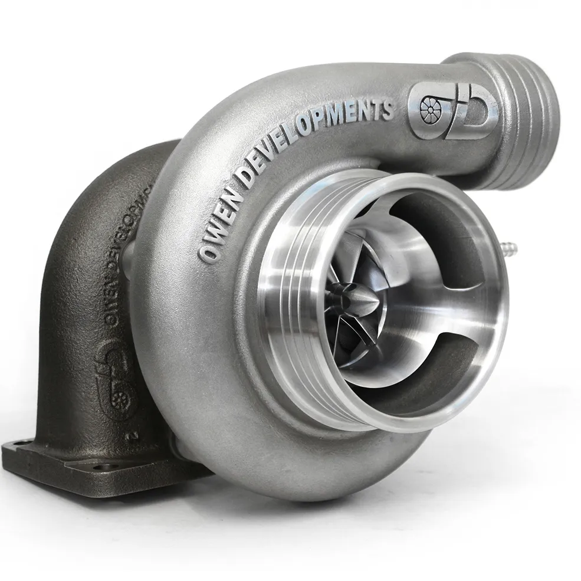
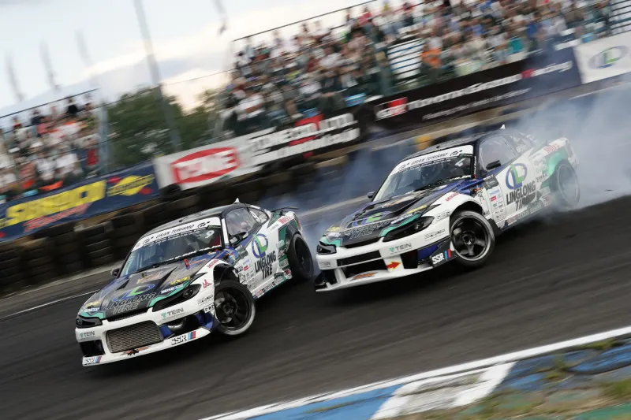
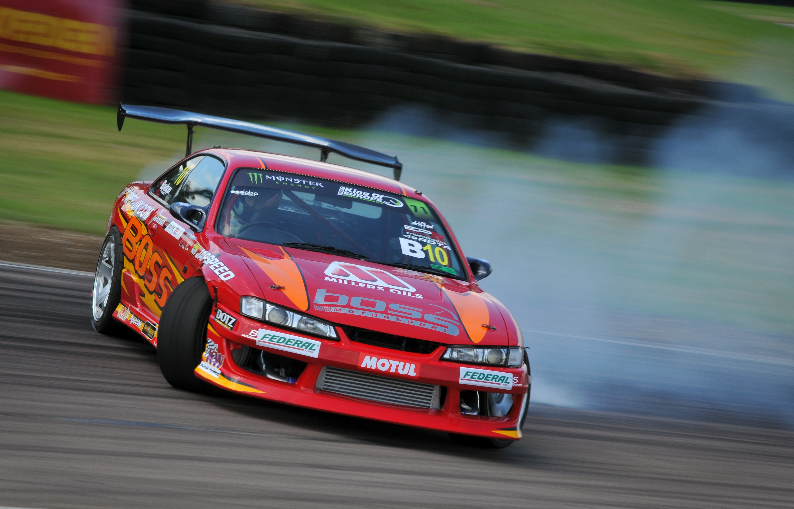

JDM Gentlemen's Agreement (Džentlmenski sporazum) bio je nezvanični,
ali strogo poštovani dogovor između glavnih japanskih proizvođača
automobila koji je stupio na snagu 1989. godine. Suočeni sa naglim
porastom broja saobraćajnih nesreća sa smrtnim ishodom i željom države da
smanji jurnjavu na ulicama, čelnici kompanija poput Toyote, Nissana i Mazde
samoinicijativno su pristali na dva ključna ograničenja.Dogovoreno je da
nijedan serijski automobil proizveden u Japanu za domaće tržište ne smije
imati više od 276 konjskih snaga (odnosno 280 KS po japanskom standardu),
kao i da maksimalna brzina mora biti elektronski ograničena na 180 km/h.
Na ovaj način, auto-giganti su izbjegli da im država nametne zakonske
restrikcije, dok su istovremeno prividno pokazali brigu za bezbjednost na putevima.
Međutim, ovaj sporazum je u praksi bio javna tajna i jedna od najvećih
varki u istoriji auto-industrije. Dok su u zvaničnim brošurama i
na reklamama svi modeli ponosno nosili cifru od tačno 276 konjskih snaga,
realnost na dyno-testovima bila je potpuno drugačija. Japanski inženjeri
su namjerno konstruisali masivne motore koji su već iz fabrike izlazili
sa preko 320 ili 330 konjskih snaga, dok su njihovi blokovi i
unutrašnje komponente namjerno pravljeni toliko izdržljivo da mogu bez
problema da podnesu i duplo više nakon modifikovanja. Ovaj legendarni dogovor
zvanično je prekinut tek 2004. godine, kada je Honda prva javno prekršila
pravilo sa modelom Legend, shvativši da su bezbjednosni sistemi
napredovali i da sporazum više nema nikakvog smisla.
Turbocharger radi po principu iskorišćavanja energije izduvnih gasova,
koji bi inače beskorisno izašli kroz auspuh. Ovi gasovi pokreću turbinu
koja je povezana sa kompresorom, a zadatak kompresora je da pod velikim
pritiskom ugura ogromnu količinu hladnog vazduha direktno u cilindre motora.
Više vazduha omogućava ubrizgavanje više goriva, što rezultira znatno
jačom eksplozijom u motoru. Za JDM kulturu turbo je bio od presudnog značaja
jer je omogućavao inženjerima da iz relativno malih motora (poput
dvolitarskih ili trolitarskih) izvuku monstruoznu snagu bez potrebe za
pravljenjem teških i ogromnih V8 motora, umjesto toga su često koristili
V4 ili V6 motore radi manje kilaze, što je direktno definisalo
prepoznatljivi zvuk i karakter japanskih sportskih mašina.

Ovo lijevo je turbocharger, ili skraćeno turbo, tamnija strana
je ona kroz koju prolazi vrući vazduh iz motora, a svjetlija
ona koja uzima hladni svježi vazduh
Modifikovanje automobila i ilegalne ulične trke na japanskim auto-putevima
(poput čuvene rute Shukan) i planinskim prevojima bili su srce JDM
kulture devedesetih. Za razliku od američkih "muscle" automobila koji su bili
napravljeni samo za pravolinijsko ubrzanje, japanske mašine su bile
inženjerska remek-djela stvorena za krivine. Ova auta su se odlikovala
nevjerovatnom agilnošću, savršenim balansom težine i izuzetno preciznim
upravljanjem. Bila su lagana, sa naprednim sistemima i pogonima na
sva četiri točka (poput Skyline-ovog ATTESA sistema) ili na zadnjim točkovima (RWD).
Upravo je taj pogon na zadnjoj osovini bio ključan za izvođenje
drifta – kontrolisanog proklizavanja koje je postalo neizostavan i vjerovatno
najatraktivniji dio kompletne japanske auto-kulture.

Ovo lijevo je drift takmičenje, slika prikazuje
kako izgleda drift tokom izvođenja
Ulični trkači i tjuning radionice brzo su shvatili da ova agilna šasija može da
podnese mnogo više nego što je fabrika predvidjela. Modifikovanje nije bilo samo
estetsko, ono je postalo nauka. Vlasnici su olakšavali auta karbonskim djelovima,
instalirali vece turbochargere, kompjuterski mapirali motore i ugrađivali
trkačke kočnice. Rezultat su bili automobili koji su ekstremno brzi u odzivu na gas,
sposobni da u sekundi promijene pravac i prenesu svaki djelić snage direktno na
asfalte Tokija ili divljih planinskih puteva. Ta kombinacija ludačke brzine,
agilnosti u krivinama i unikatnog tjunerskog stila definisala je JDM kao sinonim
za vrhunske ulične performanse.
